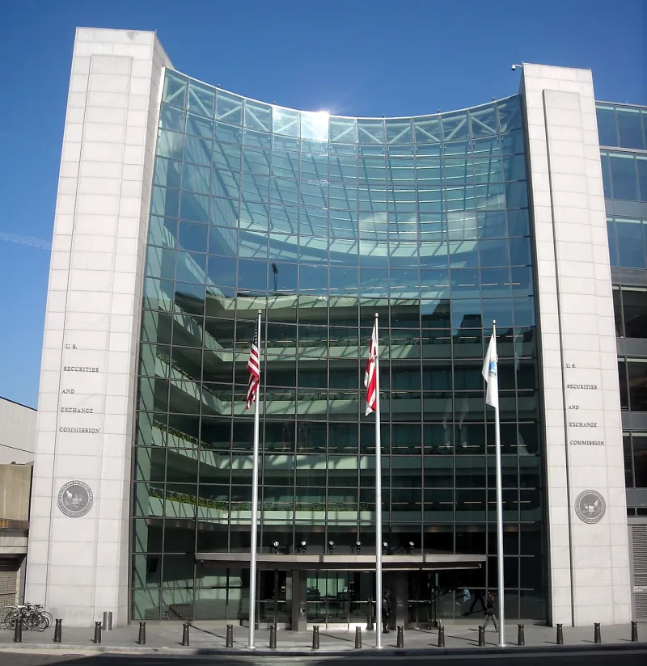
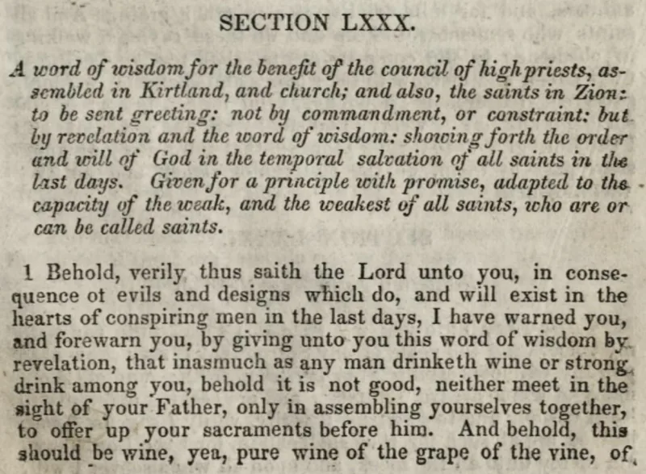

The Coca-Cola rumour is an urban legend
Don't useThe LDS answer holds up. Do not lead with this one.
The claim to stop making
That the church secretly owns Coca-Cola, or Pepsi. Usually with a joke about banning caffeine while selling it.
Why it is wrong
It is an urban legend. Snopes traced it to how neat the irony sounds.
No such stake has ever existed. And Ensign Peak's public filings, after the SEC settlement, list no Coca-Cola, no PepsiCo and no Keurig Dr Pepper.
The legend also rests on a second error, since the church never banned caffeine.
What it costs you
Repeating a legend that Snopes debunked hands your friend a free win. It also taints everything true you say afterwards.
What to use instead
The real finance story is far stronger, and it is admitted. Ensign Peak held a reserve of more than $100 billion, kept quiet.
In 2023 the SEC settled charges over hiding about $32 billion behind shell companies. That case is on this site, and it needs no legend.
How strong is this argument?
Do not use it. If church money is the subject, go to the SEC settlement.
It is adjudicated fact.
What to say
"Forget the Coke rumour. Have you read what the SEC found in 2023?"



How they answer this — at its strongest
Snopes debunked it, and Ensign Peak's filings list no Coca-Cola at all.
It is an urban legend, and flatly false.
Snopes traces it to the appeal of a delicious irony. No ownership stake has ever existed. Ensign Peak's post-settlement 13F disclosures list no Coca-Cola, no PepsiCo and no Keurig Dr Pepper holdings.
The legend also rests on a second error. The church never banned caffeine.
The verdict
Do not use this: a debunked legend hands your friend a free win.
Repeating a legend that Snopes has debunked hands the member a free win. It also taints everything else you say.
The documented finance story is far stronger. Ensign Peak's concealed reserve of more than $100 billion, and the 2023 SEC settlement, are already on this site as admitted and adjudicated fact.
If church money is the topic, go there. 'The SEC fined your church for hiding $32 billion behind shell companies' needs no urban legend's help.
Sources
- Snopes: 'Mormon Ownership of Coca-Cola'
- FAIR: Rumor that the Church owns Coca-Cola
- Faith Inspires: 'Do Mormons Own Pepsi?'